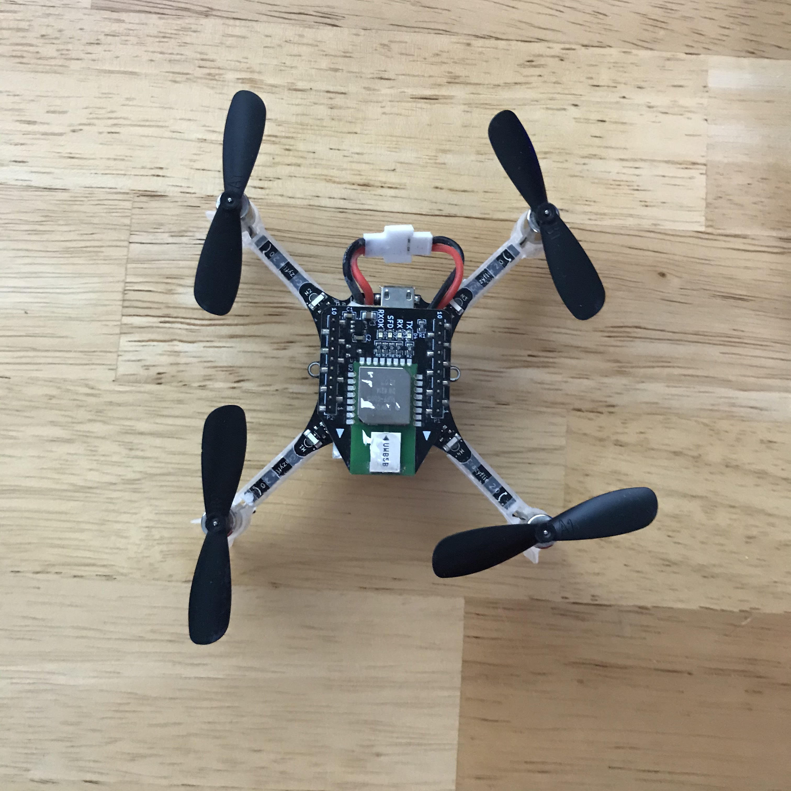
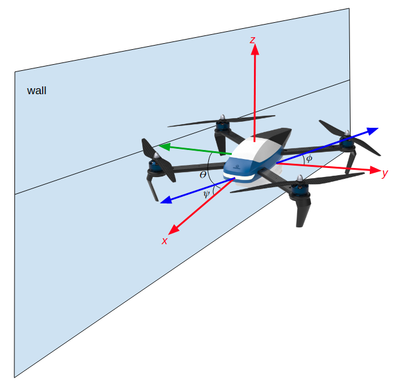
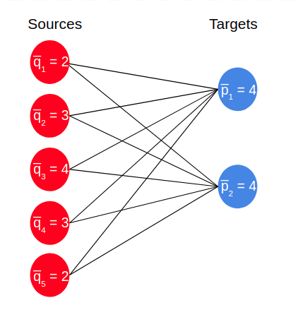

 
I started out working in the Robotics and Computer Vision lab as a research assistant helping a master's student with his work on drone to drone wind detection. We gathered IMU data from one drone flying underneath another. The data from the drone underneath as well as control data was then fed the data to a classification program to see if the computer could predict when a drone was overhead after it trained on the data.
I took over as the lead researcher on the next portion of the project, looking at if data gathered from the drone's IMU when it is flying near walls could be used to predict the presence of a wall in a flight path. To do this we gathered data from the drone when it was flying with a wall to its left, right and front. Then I built a classifier and feature generator for the computer to train and test on with the data.
We found that when using a RandomForest classifier, we can accurately predict which side a wall is on in relation to the drone with above 90% accuracy. This means this could be a potential replacement for more power-hungry radar and camera sensors when building autonomous drones.

As a graduate student I am conducting research in the Juntao Chen Group in Fordham’s Computer and Information Science Department. In this group we are applying fairness and privacy algorithms to optimal transport. Applying more simplistic fairness constraints to optimal transport will lead the way for applying more complex privacy algorithms. When training takes place on large distributed datasets in machine learning, privacy algorithms are applied to optimization algorithms in order to help preserve the privacy of the data being accessed. We are investigating if similar algorithms can be used to preserve privacy when data is being accessed to calculate optimal transport. I am the only researcher on this project giving me the independence to apply my creativity to the problem.